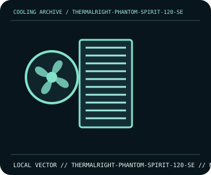

[ INDIVIDUAL COMPONENT // COOLING ]
Thermalright Phantom Spirit 120 SE
Dual-tower cooler with seven 6 mm heatpipes and two 120 mm PWM fans.

IDENTIFICATION: Confirm the complete model, revision, included mounting hardware, and host requirements against the manufacturer documentation before installation.
Manufacturer specifications
| Catalog subcategory | Tower and dual-tower air coolers |
|---|---|
| Exact model | Thermalright Phantom Spirit 120 SE |
| Heatsink | Seven 6 mm heatpipes; nickel-plated C1100 copper base. |
| Dimensions | 110 × 125 × 154 mm (L × W × H); approx. 765 g heatsink. |
| Fans | Two TL-C12B V2 120 mm PWM fans; rated up to 1500 rpm ±10%. |
| Socket and fit | Intel LGA1851/LGA1700/LGA1200/LGA115x and AMD AM5/AM4; confirm the supplied mounting hardware and allow 154 mm case height plus RAM/fan clearance. |
Compatibility and installation
The two-tower layout can overlap memory; raise or reposition the front fan only if the case still has sufficient side-panel clearance. Follow Thermalright’s mounting sequence and connect the two PWM fans to appropriate headers or a rated splitter.
- Disconnect system power before installation or rewiring, and follow the exact model manual.
- After assembly, confirm fan/pump operation and monitor temperatures before sustained workload.
Manufacturer source
- Thermalright — Phantom Spirit 120 SE product specificationsManufacturer product documentation; check the current model revision, package contents, and local socket kit before purchase or installation.
This static catalog entry is an identification aid, not a compatibility guarantee; fit and ratings can vary by revision, mounting kit, and host configuration.